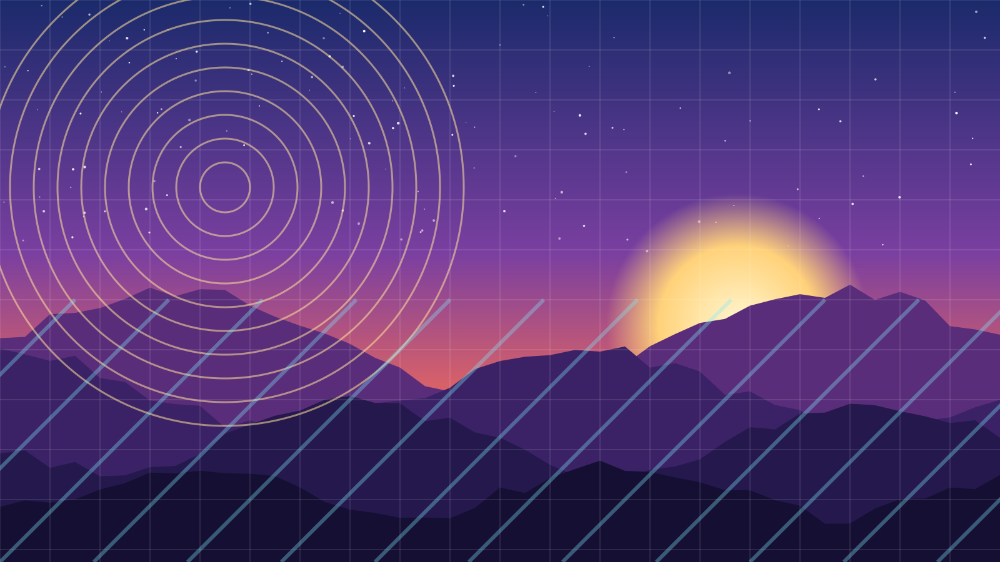

image
Immagine con rapporto d'aspetto, object-fit, caricamento differito, stato di errore con testo di ripiego, didascalia (figure) e anteprima ingrandita.
Esempi
Rapporto d'aspetto e didascalia

Immagine non disponibile<figure class="dpi-figure">
<span class="dpi-image dpi-ratio-16-9 dpi-fit-cover dpi-radius-lg">
<img class="dpi-image__img" src="../../dpi/img/scene.svg" alt="Scena astratta" loading="lazy" decoding="async" data-dpi-image>
<span class="dpi-image__fallback" role="img" aria-label="Immagine non disponibile"><span data-dpi-icon="info"></span><span>Immagine non disponibile</span></span></span>
<figcaption class="dpi-figure__caption">
Una didascalia accessibile (figure + figcaption).
</figcaption>
</figure>
Anteprima ingrandita
<span class="dpi-image-wrap">
<button class="dpi-image__zoom" type="button" data-dpi-dialog-open="dpi-1-zoom" aria-label="Ingrandisci: Scena astratta">
<span class="dpi-image dpi-ratio-4-3 dpi-fit-cover dpi-radius-md">
<img class="dpi-image__img" src="../../dpi/img/scene.svg" alt="Scena astratta" loading="lazy" decoding="async" data-dpi-image>
<span class="dpi-image__fallback" role="img" aria-label="Immagine non disponibile"><span data-dpi-icon="info"></span><span>Immagine non disponibile</span></span></span>
</button>
<dialog class="dpi-dialog dpi-glass dpi-glass--strong" id="dpi-1-zoom" aria-labelledby="dpi-1-zoom-title" data-dpi-dismissible>
<form class="dpi-dialog__form" method="dialog">
<div class="dpi-dialog__header">
<h2 class="dpi-dialog__title" id="dpi-1-zoom-title">
Scena astratta
</h2>
</div>
<div class="dpi-dialog__body dpi-stack">
<span class="dpi-image-wrap"><span class="dpi-image dpi-ratio-auto dpi-fit-contain dpi-radius-sm">
<img class="dpi-image__img" src="../../dpi/img/scene.svg" alt="Scena astratta" loading="eager" decoding="async" data-dpi-image>
<span class="dpi-image__fallback" role="img" aria-label="Immagine non disponibile"><span data-dpi-icon="info"></span><span>Immagine non disponibile</span></span></span></span>
</div>
<div class="dpi-dialog__footer">
<div class="dpi-cluster dpi-cluster--end">
<button class="dpi-btn" data-dpi-dialog-close="" type="button">
Chiudi
</button>
</div>
</div>
</form>
</dialog>
</span>
Stato di errore
 Immagine non disponibile
Immagine non disponibile
<span class="dpi-image-wrap"><span class="dpi-image dpi-ratio-4-3 dpi-fit-cover dpi-radius-md">
<img class="dpi-image__img" src="/non-esiste.png" alt="Immagine mancante" loading="lazy" decoding="async" data-dpi-image>
<span class="dpi-image__fallback" role="img" aria-label="Immagine non disponibile"><span data-dpi-icon="info"></span><span>Immagine non disponibile</span></span></span></span>
Quando usarlo
Per foto e illustrazioni con testo alternativo, rapporto d'aspetto e, se serve, ingrandimento.
Rispetto a componenti simili
Classi e attributi
| Nome | Tipo |
|---|---|
| dpi-btn | classe |
| dpi-cluster | classe |
| dpi-cluster--end | classe |
| dpi-dialog | classe |
| dpi-dialog__body | classe |
| dpi-dialog__footer | classe |
| dpi-dialog__form | classe |
| dpi-dialog__header | classe |
| dpi-dialog__title | classe |
| dpi-figure | classe |
| dpi-figure__caption | classe |
| dpi-fit-contain | classe |
| dpi-fit-cover | classe |
| dpi-glass | classe |
| dpi-glass--strong | classe |
| dpi-image | classe |
| dpi-image-wrap | classe |
| dpi-image__fallback | classe |
| dpi-image__img | classe |
| dpi-image__zoom | classe |
| dpi-radius-lg | classe |
| dpi-radius-md | classe |
| dpi-radius-sm | classe |
| dpi-ratio-16-9 | classe |
| dpi-ratio-4-3 | classe |
| dpi-ratio-auto | classe |
| dpi-stack | classe |
| data-dpi-dialog-close | attributo |
| data-dpi-dialog-open | attributo |
| data-dpi-dismissible | attributo |
| data-dpi-icon | attributo |
| data-dpi-image | attributo |
Le varianti e gli stati sono quelli mostrati negli esempi: copia il markup e cambia le classi di variante (es. dpi-btn--primary). Gli strati ottici di lenti e animazioni li crea DPI.
Comportamento: tastiera, eventi e stati
Tastiera
Con zoom il pulsante apre un dialog; Escape chiude.
Eventi
dpi:open/dpi:close del dialog.
Stati e varianti
caricata, in errore (testo di ripiego), differita (lazy).
Parti incomplete
Nessun srcset/picture (un solo src).